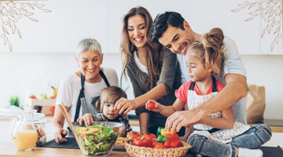
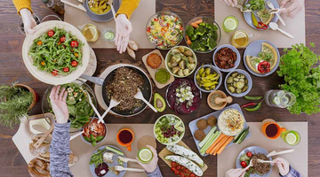
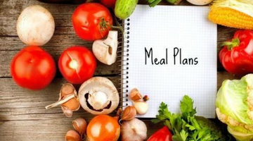
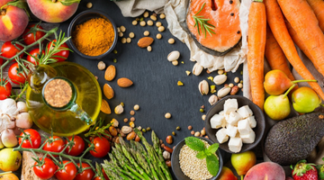
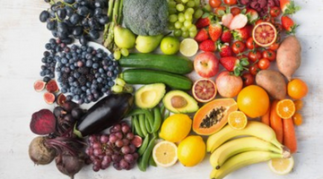

| Home Page | How we help? | What we offer? |
|---|

Family Cooking

- Cooking together creates closer bonds and helps build lifelong memories. You can also use the time to listen, share and talk with your partner or child.
- It brings comfort. Cooking gives us comfort.
- It allows you to learn about food. Sharing recipes is a fine example of food bringing people together.
- You eat fewer calories without even realizing it and you are more mindful of what you are putting into your body.
- It promotes better health. Healthy meals with the family promote better overall health and a longer lifespan.
- Cooking engages our senses and it has the ability to activate memories
Adventurous Kitchen

- Don’t think of your favorite recipe merely as one dish but rather as layers and layers of flavors. With that mentality, taste and dissect the details at your next dinner. Who knows? You may think you dislike a spice or ingredient only to realize it’s in a lot of the foods you love.
- Consider each trip to the market as a chance to explore and aim to buy a new ingredient each time you shop. Sure, you may encounter a few duds, but more often than not, you’ll be pleasantly surprised and realize you actually love sauerkraut.
- Change your perspective and think of cooking not as drudgery but as your daily chance for culinary creativity. And really, it’s a lab with pretty low risk -- the worst-case scenario is that the dog ends up being fed really well. Start simple by swapping the herbs and spices in your favorite recipes, then graduate to using ingredients you’ve never tried.
Meal Plans

- Save time - Planning your meals for the week can help you to manage your time better.
- Portion control - If your goals are weight loss driven, prepping in advance can help you manage your portion sizes which means you’ll be less likely to overeat.
- Reduces the amount of food waste - Whether you’re planning out your meals or using a food delivery service to manage your meal prep, it can help reduce the amount of food you waste.
- Reduces the stress of cooking last minute - By having your meals organised ahead of time can reduce the dreaded ‘what’s for dinner?’ question.
- Save money - Who doesn’t love to save some money? With meal planning, you can be more prepared, and this reduces impulse buying of unnecessary groceries at the shops.
- Avoid unhealthy options - Meal planning helps to make the easy option a healthy one.
- Enjoy more variety - When we’re busy, it can be easy to cook the same thing over and over again. Meal planning helps to ensure you’re eating a variety of different foods.
Life Staples

- All exercise is beneficial and will help with calories burned, but walking or zone 2 cardio are the best tools available for fat loss outside of nutrition. We discuss why this is the case on the initial call. Taking a portion of this time to plan the next few days and think over your habits and goals creates a continuity of thought that is great to stay focused as habits form.
- Good digestion is key to both overall health and weight loss and is more of an issue for some people. We advise on reducing inflammation which can both reduce discomfort and water retention, which can lead to significant weight loss on its own. We also advise on motility which is also important in both weight loss and health
- Certain supplements are proven to have a positive effect on hormonal health and neurotransmitters, which in turn can positively affect well being and weight loss. We can also advise on sleep and stress management where appropriate as these can also affect your nutrition journey.
How to Eat the Rainbow?

- Red fruits and vegetables are nature's powerhouse on nutrition and benefits.Red foods have cancer-fighting benefits, could reduce the risk of diabetes and heart disease, and a host of other benefits.
- Orange and Yellow fruits and vegetables are packed full of nutrients. They are rich in Vitamin C and carotenoids, including beta-carotene, which promotes healthy vision and cell growth.
- Green colored fruits and vegetables are some of the healthiest foods you can eat. Leafy green vegetables are loaded with antioxidants and folates. Greens like Kale has as much calcium as milk and cruciferous vegetables, like broccoli could enhance your immune system and contain properties that could block cancer.
- Blue and Purple foods contain anthocyanins, powerful antioxidants that may help protect cells from damage and could reduce the risk of cancer, stroke, and heart disease, help lower blood pressure naturally, and repair damage from stress and inflammation.
- White and Brownfoods are not as bright as the other colors, but they still contain helpful nutrients that help reduce the risks of cancer and have anti-inflammatory properties and they plays a key role in supporting the immune system.